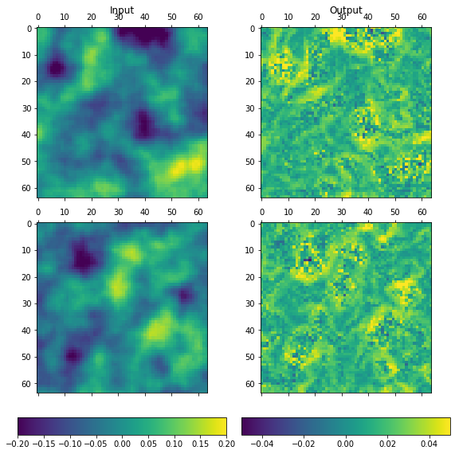
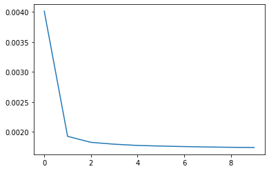
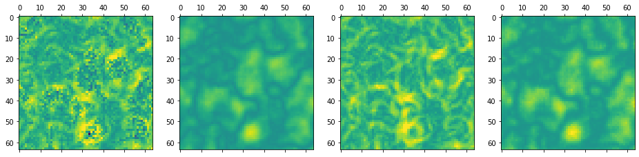

UNet QRNN¶
This notebooks provides a simple, synthetic example to test and illustrate the use of a UNet-type network architecture as a QRNN.
[2]:
%matplotlib inline
%load_ext autoreload
%autoreload 2
import matplotlib.pyplot as plt
import numpy as np
import scipy as sp
The autoreload extension is already loaded. To reload it, use:
%reload_ext autoreload
Training data¶
The input data consists of greyscale images and the output is just the magnitude of the image gradients. The output is corrupted using heteroscedastic, Gaussian noise whose standard deviation is \(10\%\) of the absolute pixel value.
[3]:
from scipy.signal import convolve
def create_data(n):
w = 64
kw = 21
# Input data: Smooth random field.
k = np.linspace(-3, 3, kw)
k = np.exp(-np.sqrt((k ** 2).reshape(1, 1, -1, 1) + (k ** 2).reshape(1, 1, 1, -1)))
k /= k.sum()
x = np.random.normal(size=(n, 1, w + kw + 1, w + kw + 1))
x = convolve(x, k, mode="valid")
# Compute gradients
kx = 0.5 * np.array([-1, 0, 1]).reshape(1, 1, 1, 3)
ky = 0.5 * np.array([-1, 0, 1]).reshape(1, 1, 3, 1)
dx = convolve(x, kx, mode="valid")[:, :, 1:-1, :]
dy = convolve(x, ky, mode="valid")[:, :, :, 1:-1]
m = np.sqrt(dx ** 2 + dy ** 2)
# Add noise
x = x[:, :, 1:-1, 1:-1]
y = m + 0.1 * x * np.random.normal(size=m.shape)
return x, y
[22]:
x, y = create_data(10000)
[25]:
from matplotlib.colors import Normalize
from matplotlib.gridspec import GridSpec
def plot_data(x, y, n = 4):
f = plt.figure(figsize = (n * 4, 8))
gs = GridSpec(n + 1, 2, height_ratios = [1.0] * n + [0.1])
norm_x = Normalize(-0.2, 0.2)
norm_y = Normalize(-0.05, 0.05)
for i in range(n):
ind = np.random.randint(x.shape[0])
ax1 = plt.subplot(gs[i, 0])
img1 = ax1.matshow(x[ind, 0], norm=norm_x)
ax2 = plt.subplot(gs[i, 1])
img2 = ax2.matshow(y[ind, 0], norm=norm_y)
if i == 0:
ax1.set_title("Input", pad=20)
ax2.set_title("Output", pad=20)
cax1 = plt.subplot(gs[-1, 0])
plt.colorbar(img1, cax=cax1, orientation="horizontal")
cax2 = plt.subplot(gs[-1, 1])
plt.colorbar(img2, cax=cax2, orientation="horizontal")
plt.tight_layout()
return f
[26]:
f = plot_data(x, y, 2)

Training¶
[27]:
from typhon.retrieval.qrnn import QRNN
from typhon.retrieval.qrnn.models.pytorch import UNet
skip_connection = "all"
quantiles = np.array([0.05, 0.15, 0.25, 0.35, 0.45, 0.5, 0.55, 0.65, 0.75, 0.85, 0.95])
unet = UNet(1, quantiles, skip_connection=skip_connection)
qrnn = QRNN(1, model=unet)
[ ]:
training_data = (x, y)
qrnn.train(training_data, batch_size=8, maximum_epochs=10, momentum=0.99, gpu=False)
qrnn.train(training_data, batch_size=8, gpu=False)
[31]:
if skip_connection is None:
qrnn.save("../../models/unet.mdl")
else:
qrnn.save("../../models/unet_skip_{}.mdl".format(skip_connection))
[32]:
plt.plot(qrnn.model.training_errors)
[32]:
[<matplotlib.lines.Line2D at 0x7fc43cf4bed0>]

Validation¶
[33]:
x, y = create_data(1)
y_pred = qrnn.predict(x)
[34]:
y_pred.shape
[34]:
(1, 11, 64, 64)
[35]:
qrnn.quantiles
[35]:
array([0.05, 0.15, 0.25, 0.35, 0.45, 0.5 , 0.55, 0.65, 0.75, 0.85, 0.95])
[36]:
from matplotlib.colors import Normalize
from matplotlib.gridspec import GridSpec
def plot_result(x, y, y_pred):
f = plt.figure(figsize = (16, 4))
gs = GridSpec(1, 4, height_ratios = [1.0])
norm = Normalize(-0.05, 0.05)
ax1 = plt.subplot(gs[0])
ax1.matshow(y[0, 0], norm = norm)
ax2 = plt.subplot(gs[1])
ax2.matshow(np.abs(2.0 * 0.1 * x[0, 0]), norm = norm)
ax3 = plt.subplot(gs[2])
ax3.matshow(y_pred[0, 5], norm = norm)
ax4 = plt.subplot(gs[3])
ax4.matshow(0.7/0.68 * (y_pred[0, -2] - y_pred[0, 1]), norm = norm)
return f
[37]:
f = plot_result(x, y, y_pred)
